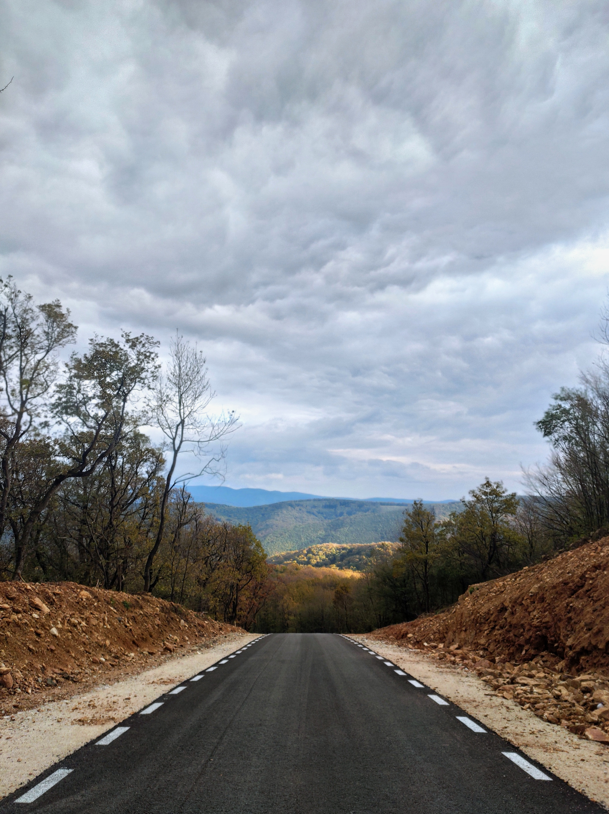
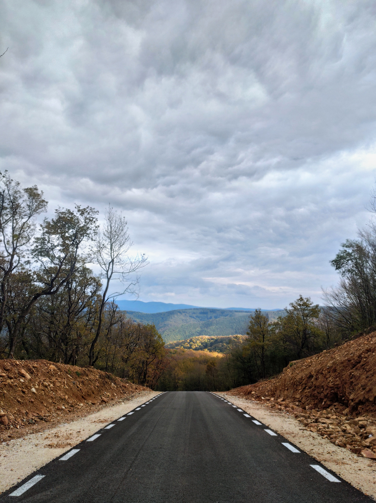
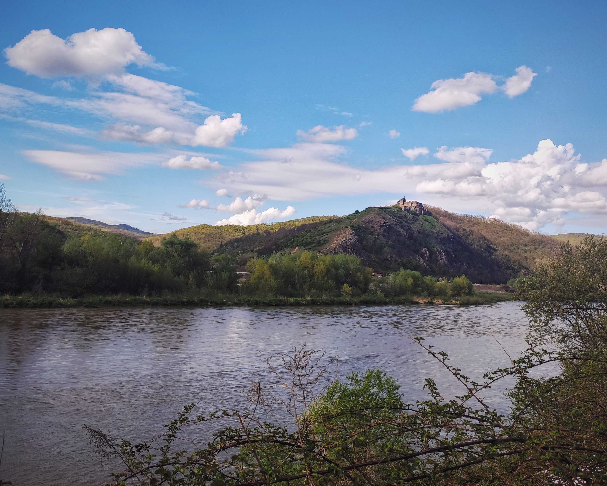
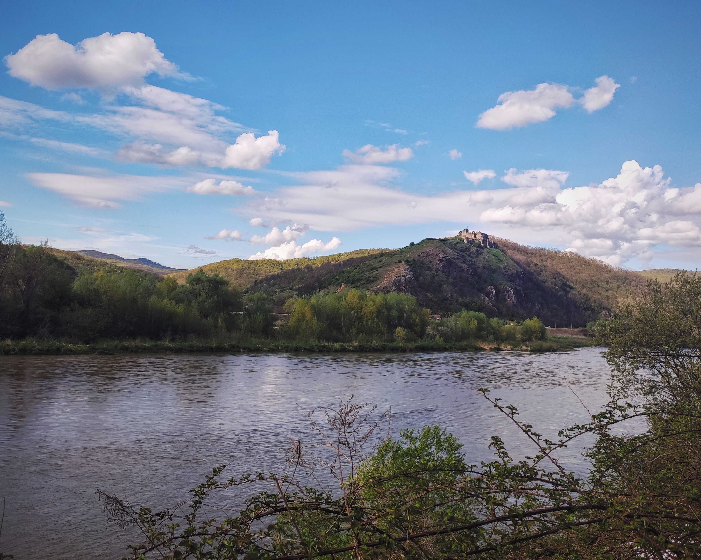

În cinstea bunicului meu, care prin lentilele pedologiei a deslușit inestimabile profunzimi geologice
Într-acel moment când îmi savurez ceaiul în compania cățelului naiv și drag, privind alăturea către echipamentul pregătit pentru aventură realizez înălțimea culmii către care pornesc. Trecuse un an de când m-am reapucat de ciclism pentru a-mi îngriji starea de sănătate. Între timp mi-am redobândit ambiția, mi-am formulat obiective. Încă din iarnă am urmat o pregătire structurată... dar astăzi ziua e blândă și însorită. Anduranța m-a obișnuit, după pildele sale, să rămân statornic pe calea la care am pornit. Într-acest moment observ cât de departe am ajuns.
Începe cu un zâmbet. Mă îndrept către vest ca să apar, la apus, din est. Fac efort ca să nu fac prea mult efort. Pe cât vânt vestic am izbit, de-a lungul timpului, pe lungimea asta de șosea ațintită înspre graniță, pe-atât de calmă e dimineața aceasta. Precum vuisem în juniorat, la clubul Voința, "antrenamentele pe Variaș", cu doza echivalentă de răbdare las acum kilometrii să treacă. Ciclismul e adesea un sport dur, dar când am de parcurs 300 de km singura grijă aparentă e îndoparea cât mai multor banane și fursecuri. Curios sentiment, tocmai încercările cele mai solicitante sunt acelea mai plăcute.
Împing cu ușurință pedalele de parcă m-ar purta un curent printre albastrul cerului și verdeața lumii. Plutesc peste câmpiile decorate cu maci, încărcate de amintiri. Adulmec din priviri căprioare și iepuri și alte făpturi care ne încântă fascinația pentru natură. Gândurile îmi zburdă și ele, zboară peste câmpia întinsă și se pierd în derivă.

Ajuns în Sântana cu buzunarele golite de prima porție de merinde, trag pe marginea drumului pentru a-mi consulta în această privință ranița. Profit de năzdrăvănia unor câini și cutez, nesociabilul de mine, să dau "bună ziua" unor păstori. Încăierându-ne în relatări și modestii apuc să îl cunosc pe tânărul Avram. Ne bucurăm de compania celuilalt, descopăr la el calități greu de aflat în obișnuita învolburare citadină. Avram a avut curajul de a se retrage din promițătoarea urbe ca să își caute menirea la sat. Acum se îngrijește de o cireadă numeroasă, iar aici este apreciat. Demnitatea e greșit înțeleasă astăzi, și iată că puțini o regăsesc.
Nu apuc să plec că se oprește o mașină albă lângă mine: "Îți mai aduci aminte de noi?". Mi se pare incredibil, dar da! Am coborât de peste o sută de ori înfiorătoarele pante ce duc la mănăstirea Feredeu, dar odată am pățit necazul de a opri de la vitezele acelea nebune. În critica strâmtoare am părtinit cu două persoane deosebit de omenoase, care iată că astăzi m-au regăsit și s-au oprit să mă salute. Pe cei mai mulți arădeni îi atrag munții Zărandului cei îmbrăcați în păduri. Au caracteristica aparte de a se înălța direct din câmpie, fără a mai trece prin podiș. Cicliștii evadează aici, înfruntând pantele brutale către cetatea de la Șiria și izvorul Feredeu, alergătorii bătătoresc potecile, parapantiștii îmblânzesc curenții de aer, iar sătenii, pe lângă practica agriculturii la poalele lor, îi explorează pentru a culege ghiocei, ciuperci, măceșe sau pentru a mâna oile și caprele. Cu câteva zile în urmă ne-am învârtit cu trupa pe aici într-o tură cu peste 2000 de metri acumulați în urcări, dar astăzi cetatea străjuiește peisajul croazierei.


 
 
Împlinesc 100 de km cu 33 km/h viteză medie când ajung pe șoselele nestrăbătute din centrul județului, în pitoreasca Țară a Zărandului. În parcursul anilor observasem filmul lent al anotimpurilor cu nuanțele lor schimbătoare. Ajung să mă întreb: ce este mai prețios dintre a aprecia, din toate privințele, un tărâm, și a-i extinde orizonturile? În copleșeala momentului îmi rămâne doar să mă bucur de bariera depășită, prin forțe proprii. Ambiția exploratorului se transpune în galanterie.


Atracția mult așteptată a fost traversarea munților hercinici. Dar înaintea celor 40 de km prin pura serenitate a naturii se cuvine un popas. Opresc la Gurahonț nu pentru deliciul său dendrologic, ci pentru a-mi devora salata mediteraneană pe marginea unui podeț. De aici drumul urcă domol și se afundă tainic în prospețimea pădurii.
Îmbătat de singurătate și depărtare apăs cu voinicie pedalele și încep să cânt improvizații împiedicate. Însă pulsul inimii ezită să îmi dea ascultare. Am depășit 180 de km, cea mai lungă distanță pe care am parcurs-o dintr-o dată anul acesta. Substanțiala provocare începe de aici. Recunosc semnele hipoglicemiei. După dansurile nimfelor urmează coborârea înceată pe care, lipsit de forțe, las bicicleta să se scurgă.


Lângă palatul de la Săvârșin îmi pun speranța în seama câtorva prăjituri și a unei limonade. Înaintez spre Troaș, când cineva dintr-o mașină care a încetinit îmi strigă: "Haide Cycling Team Arad!". Aș fi putut la fel de bine fi aterizat din Deva sau din Timișoara, la fel de străin, neidentificat și nebunesc aș fi părut aici. Dar la cât de buimăcit sunt, trebuie să mă încred în pronunțarea șoferului. Puțin mai târziu mă rog unei domnișoare cu privirea duioasă pentru a-mi potoli setea. În cele din urmă ajung la Troaș și zăbovesc lângă impresionanta biserică de lemn. Picnicul nu mai satisface corpul ostenit. Se va lăsa seara. Iureșul din cofetărie nu mai satisface corpul învălmășit. E un calvar.
Mai sunt 90 de km rămași. Vântul s-a înăsprit după-amiaza pe culoarul văii Mureșului și îmi izbește ultimele speranțe. Aș crede că stau pe loc dacă nu aș știi că înaintez. Mi-aș încovoia spatele din calea vântului dacă nu mi-ar fi înțepenită ființarea. Aș degusta peisajul colinar dacă mi-ar îngădui mirajul pragului casei.
 

Să nu le mai dăm ascultare celor care după ce își întind triumfători mâinile către ceruri nu se prăvălesc de parcă ar fi trăsniți. Să iubim pielea brăzdată de trai, încercări și emoții, în locul poftei de profit. Să ne frângem târâș carnea ca nu cumva să ne mulțumească confortul propriei condiții. Durerea de acum pălește în comparație cu suferințele înfruntate de-a lungul vremilor.
Ajung după alte 3 ore la Arad; iar soarele apune.